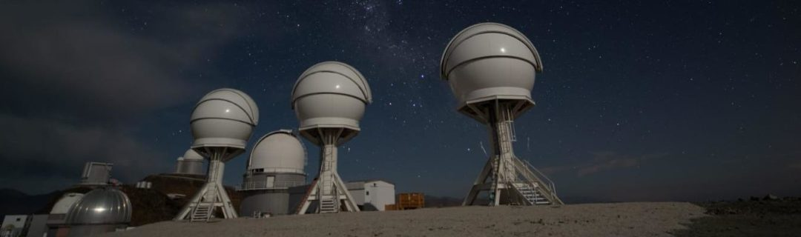

BlackGEM (Black hole Gravitational wave ElectroMagnetic counterpart array) is an array
of three telescopes at La Silla, Chile.
Each telescope is 65cm in diameter and is equipped with a 10,000 x 10,000 pixel CCD,
with each pixel being 9 microns across. The focal length is f/5.5, and the angular
resolution is limited only be the seeing (~1 arcsecond).
BlackGEM will be invaluable to gravitational wave follow-up, imaging a two-square-degree
field of view when completed down to roughly 20th magnitude. This also means that it
is a great help to many fields of transient astronomy, from Low-Mass X-ray Binaries,
to Ultra-Luminous X-ray sources, to Cataclysmic Variables, to any other field that
requires nightly observations of new transient sources.